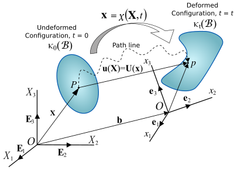
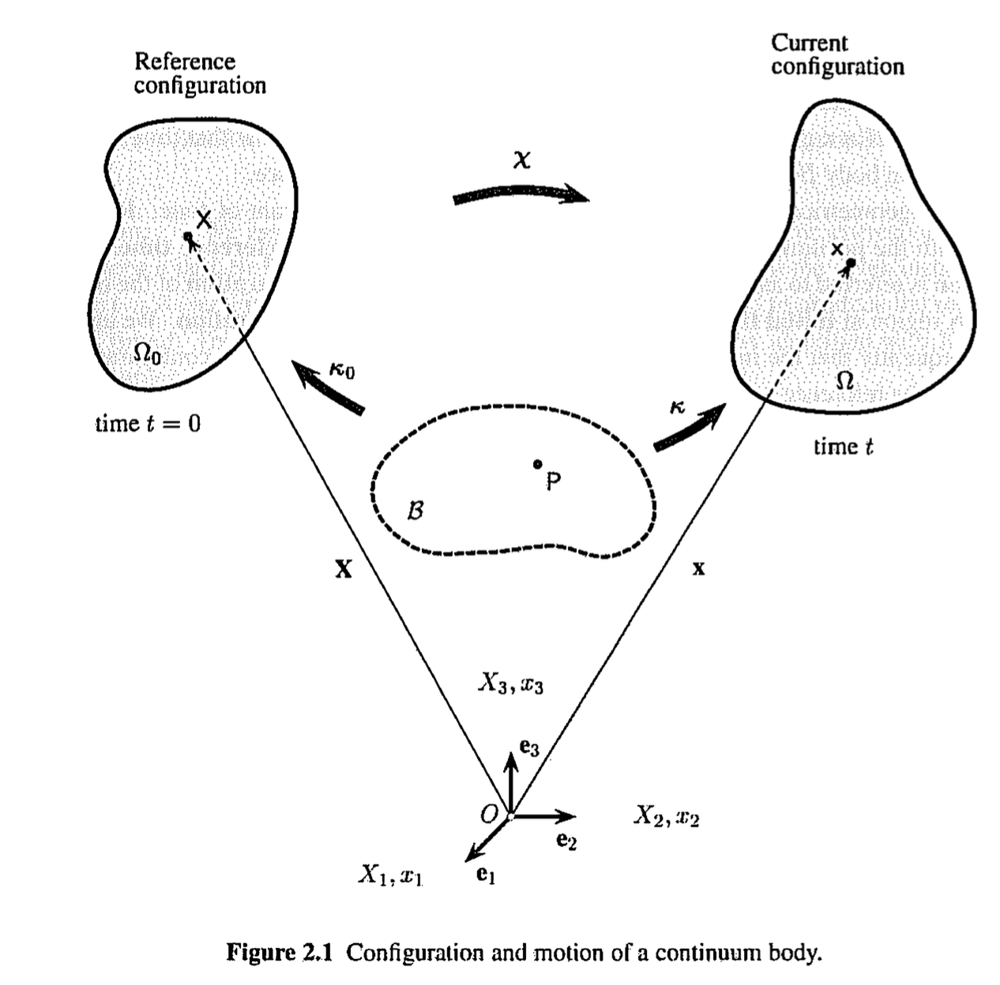
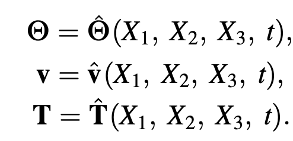
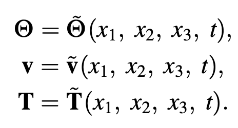
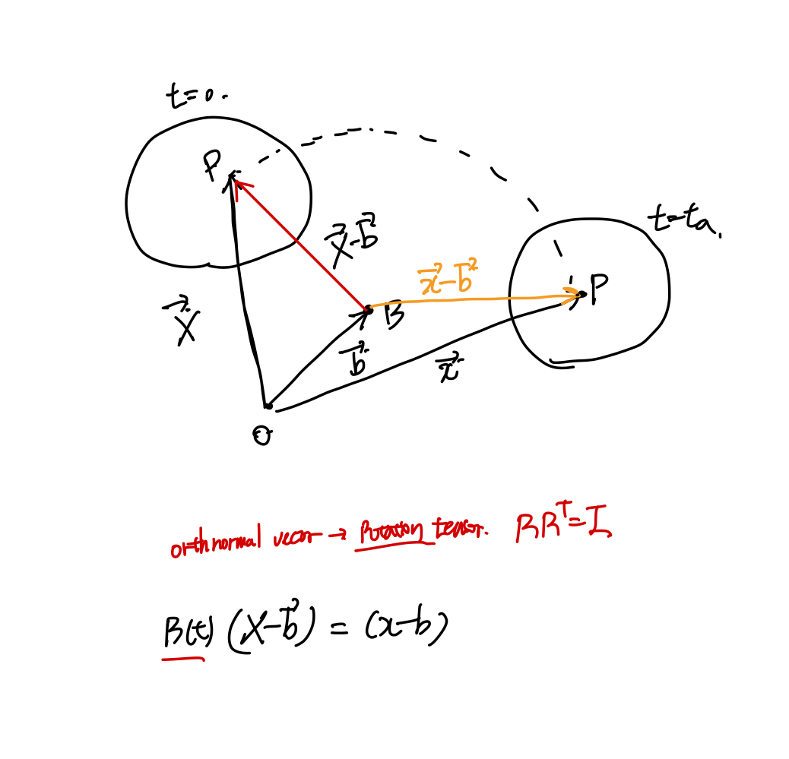
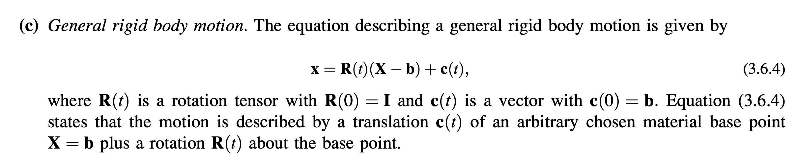
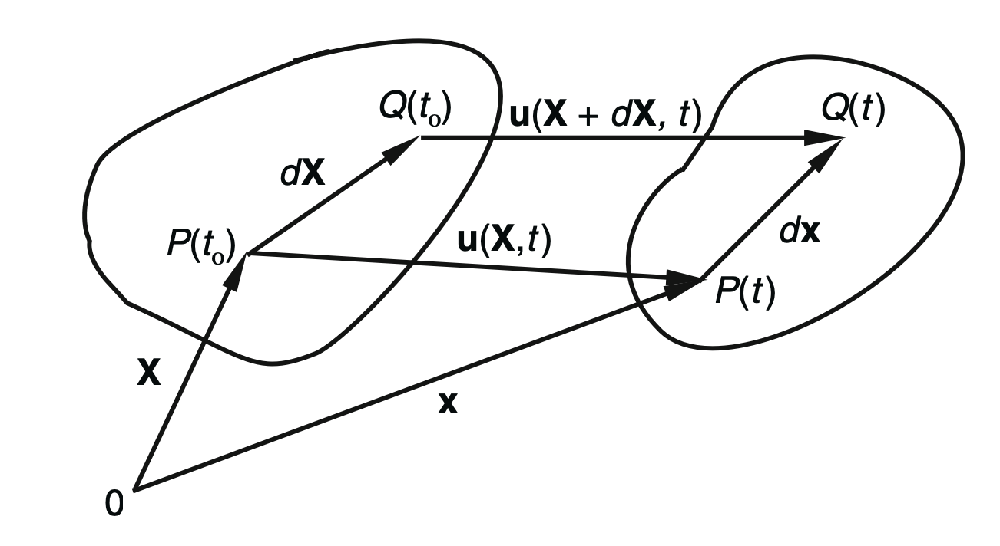
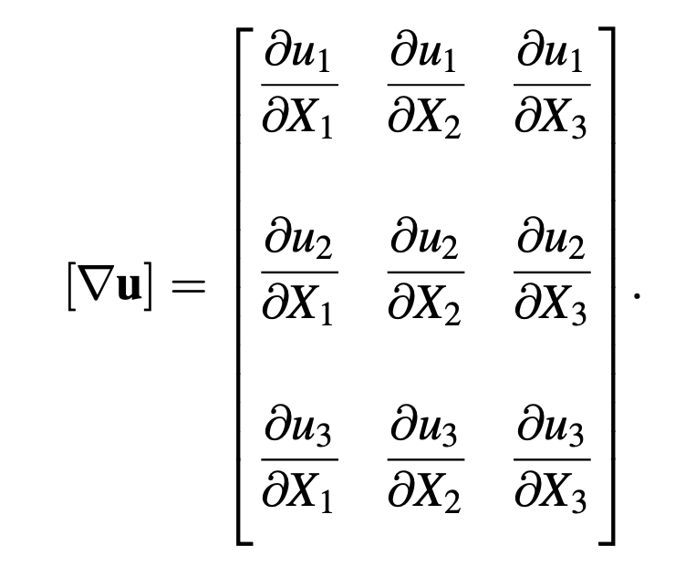

<!DOCTYPE html>
<html lang="ko" data-theme="light">
<head>
  <meta charset="utf-8">
  <meta name="viewport" content="width=device-width, initial-scale=1">
  <title>Ch1 Kinematics-part1 | Sehyeog Kim</title>
  <link rel="stylesheet" href="../../../../assets/css/style.css">
  <script>!function(){var t=localStorage.getItem("theme")||"light";document.documentElement.setAttribute("data-theme",t)}();</script>
</head>
<body>
  <button class="theme-toggle" aria-label="Toggle theme"><svg class="icon-sun" viewBox="0 0 24 24" fill="none" stroke="currentColor" stroke-width="2" stroke-linecap="round" stroke-linejoin="round"><circle cx="12" cy="12" r="5"/><line x1="12" y1="1" x2="12" y2="3"/><line x1="12" y1="21" x2="12" y2="23"/><line x1="4.22" y1="4.22" x2="5.64" y2="5.64"/><line x1="18.36" y1="18.36" x2="19.78" y2="19.78"/><line x1="1" y1="12" x2="3" y2="12"/><line x1="21" y1="12" x2="23" y2="12"/><line x1="4.22" y1="19.78" x2="5.64" y2="18.36"/><line x1="18.36" y1="5.64" x2="19.78" y2="4.22"/></svg><svg class="icon-moon" viewBox="0 0 24 24" fill="none" stroke="currentColor" stroke-width="2" stroke-linecap="round" stroke-linejoin="round"><path d="M21 12.79A9 9 0 1 1 11.21 3 7 7 0 0 0 21 12.79z"/></svg></button>

  <header class="mobile-header">
    <span class="site-title">Sehyeog Kim</span>
    <button class="menu-toggle" aria-label="Menu">&#9776;</button>
  </header>
  <div class="sidebar-overlay"></div>

  <div class="site-wrapper">
    <aside class="sidebar">
      <div class="sidebar-bg">
        
      </div>
      <div class="sidebar-profile">
        
        <h1 class="profile-name">Sehyeog Kim</h1>
        <p class="profile-bio">AI &amp; Computational Engineering<br>Personal Blog</p>
        <div class="profile-links">
          <a href="https://github.com/Sehyeogkim" target="_blank" rel="noopener">
            <svg viewBox="0 0 16 16" width="15" height="15" fill="currentColor"><path d="M8 0C3.58 0 0 3.58 0 8c0 3.54 2.29 6.53 5.47 7.59.4.07.55-.17.55-.38 0-.19-.01-.82-.01-1.49-2.01.37-2.53-.49-2.69-.94-.09-.23-.48-.94-.82-1.13-.28-.15-.68-.52-.01-.53.63-.01 1.08.58 1.23.82.72 1.21 1.87.87 2.33.66.07-.52.28-.87.51-1.07-1.78-.2-3.64-.89-3.64-3.95 0-.87.31-1.59.82-2.15-.08-.2-.36-1.02.08-2.12 0 0 .67-.21 2.2.82.64-.18 1.32-.27 2-.27.68 0 1.36.09 2 .27 1.53-1.04 2.2-.82 2.2-.82.44 1.1.16 1.92.08 2.12.51.56.82 1.27.82 2.15 0 3.07-1.87 3.75-3.65 3.95.29.25.54.73.54 1.48 0 1.07-.01 1.93-.01 2.2 0 .21.15.46.55.38A8.013 8.013 0 0016 8c0-4.42-3.58-8-8-8z"/></svg> GitHub
          </a>
        </div>
      </div>
      <nav class="sidebar-nav">
        <a href="/" class="nav-item nav-home">Home</a>
        <span class="nav-group-label">AI</span>
        <a href="/blog/ai/agentic-ai-theory/" class="nav-item">Agentic_AI_Theory<span class="nav-post-count">8</span></a>
        <a href="/blog/ai/deep-learning/" class="nav-item">Deep-learning<span class="nav-post-count">14</span></a>
        <a href="/blog/ai/machine-learning/" class="nav-item">Machine_Learning<span class="nav-post-count">11</span></a>
        <a href="/blog/ai/sensitivity-analysis/" class="nav-item">Sensitivity_Analysis<span class="nav-post-count">3</span></a>
        <span class="nav-group-label">AI_Application</span>
        <a href="/blog/ai_application/claude/" class="nav-item">Claude<span class="nav-post-count">2</span></a>
        <span class="nav-group-label">BioMechanics</span>
        <a href="/blog/biomechanics/blood-flow-and-metabolism/" class="nav-item">Blood-Flow-and-Metabolism<span class="nav-post-count">12</span></a>
        <a href="/blog/biomechanics/cardiovascular-diseases/" class="nav-item">CardioVascular_Diseases<span class="nav-post-count">8</span></a>
        <span class="nav-group-label">Mechanical_Engineering</span>
        <a href="/blog/mechanical-engineering/computational-linear-algebra/" class="nav-item">Computational-Linear-Algebra<span class="nav-post-count">15</span></a>
        <a href="/blog/mechanical-engineering/computational-fluid-dynamics/" class="nav-item">Computational_Fluid_Dynamics<span class="nav-post-count">14</span></a>
        <a href="/blog/mechanical-engineering/continuum-mechanics/" class="nav-item active">Continuum-Mechanics<span class="nav-post-count">9</span></a>
        <a href="/blog/mechanical-engineering/engineering-mathematics/" class="nav-item">Engineering_Mathematics<span class="nav-post-count">14</span></a>
        <a href="/blog/mechanical-engineering/finite-element-method/" class="nav-item">Finite-Element-Method<span class="nav-post-count">1</span></a>
        <a href="/blog/mechanical-engineering/fluid-mechanics/" class="nav-item">Fluid_Mechanics<span class="nav-post-count">18</span></a>
        <a href="/blog/mechanical-engineering/gas-dynamics/" class="nav-item">Gas_Dynamics<span class="nav-post-count">24</span></a>
        <a href="/blog/mechanical-engineering/heat-transfer/" class="nav-item">Heat-transfer<span class="nav-post-count">8</span></a>
        <a href="/blog/mechanical-engineering/solid-mechanics/" class="nav-item">Solid_Mechanics<span class="nav-post-count">25</span></a>
        <a href="/blog/mechanical-engineering/thermodynamics/" class="nav-item">Thermodynamics<span class="nav-post-count">14</span></a>
        <a href="/blog/mechanical-engineering/viscous-flow/" class="nav-item">Viscous_Flow<span class="nav-post-count">28</span></a>
      </nav>
    </aside>

    <main class="main-content">
      <div class="breadcrumb"><a href="/">Home</a><span class="sep">/</span><a href="/blog/mechanical-engineering/">Mechanical_Engineering</a><span class="sep">/</span><a href="/blog/mechanical-engineering/continuum-mechanics/">Continuum-Mechanics</a><span class="sep">/</span><span>Ch1 Kinematics-part1</span></div>
<a href="/blog/mechanical-engineering/continuum-mechanics/" class="back-link">&larr; Back to Continuum-Mechanics</a>
<div class="page-header"><h1>Ch1 Kinematics-part1</h1></div>
<div class="post-meta"><span class="meta-item"><span class="meta-label">Date:</span> 2025-01-26</span><span class="meta-item"><span class="meta-label">Category:</span> Continuum-Mechanics</span><span class="meta-item"><span class="meta-label">Source:</span> <a href="https://jeffdissel.tistory.com/153" target="_blank" rel="noopener">link</a></span></div>
<article class="post-content"><p>연속체 역학은 크게 3가지 부류로 나뉜다.<br />
1. The study of motion and deformation<br />
(Kinematics)<br />
2. The study of stress in Continuum<br />
(Stress)<br />
3. Fundamental laws of physics<br />
(governing the motion of a continuum)<br />
먼저 우리는 motion, deformation 즉<br />
어떤 물체의 움직임에 대해서만 관찰해보자.<br />
(Kinematics)</p>
<hr />
<p><br />
Figure of continuum Mechanics<br />
그 전에 우리가 배우는<br />
연속체<br />
란 무엇인지에 대해서 이야기해보자.<br />
Motivation:<br />
기본적으로 공학에서<br />
우리는<br />
어떤 물질, material의<br />
움직임 +<br />
작용하는 힘 을 관찰하여 (혹은 계산하여 )<br />
물질 내부의 성질(온도,압력,속력 등등)<br />
을 분석하고자 한다.<br />
예를들어 (H20, 물)을 분석한다고 가정하자.<br />
여기서,<br />
물<br />
분자<br />
들이 어떻게 상호작용 하는지 분석하는<br />
Microscopic anaylsis<br />
(미세단위) 방식이 있고,<br />
이와 반대로,<br />
모든 물분자들의 내부 상호작용을<br />
무시하고<br />
,<br />
물 전체를 하나의 시스템<br />
(Continuous Medium, 연속체)라고 정의하는<br />
Continous Analysis 가 존재한다.<br />
즉, 후자의 방식으로 물질의 property들을 유도하는 것이.<br />
연속체 역학<br />
이다.<br />
여기서 핵심은 연속체 내부(물질 내부)의 성질들은<br />
시공간에 대해서 연속적으로 변화한다는 것.<br />
먼저 연속체의 property의<br />
공간적 변화<br />
를<br />
우리는 define하기 위해서,<br />
(밑의 그림처럼)<br />
reference point(원점)을 O라고 정의<br />
하고,<br />
기준점 O, 3개의 기저 e1,e2,e3 를 가지는<br />
기준좌표계<br />
를 정의한다.<br />
<br />
Reference Coordinate<br />
즉, 이렇게 우리는 공간좌표를 정의하면<br />
공간에 따른 물질의 성분을 분석<br />
할 수 있게 된다.<br />
하지만 아까 위에서 언급했다 싶이, 물질의 성분은<br />
공간에 따라 변하면서<br />
시간에 따라서도<br />
변한다.<br />
이를 해결하기 위해 정의하는 Location vector.<br />
1. Location Vector(X and x)<br />
<br />
벡터 X: t = 0 일때, 분석하고 싶은 물질의 내부의 점과 원점을 잇는 벡터.<br />
벡터 x: t = t_a 일때, 분석하고 싶은 물질의 내부의 점과 원점을 잇는 벡터.<br />
여기서 생각을 해보자, 우리가 분석하고 싶은 것은 정확히<br />
물질내부의 같은 점이 t_a시간이 흐르고(시간변화에 따라)<br />
어떻게 위치가 바뀌었는지(공간변화)<br />
를 알고 싶어한다.<br />
따라서, 벡터x와 X의 정의에서 언급한,<br />
'물질 내부의 점'<br />
을 같은 점이라고 생각하고<br />
다시 정의해보자.(물질내부의 점 = 점 P라고 하자).<br />
벡터 X: t = 0 일때, 점P와 원점을 잇는 벡터.<br />
벡터 x: t = t_a 일때, 점P와 원점을 잇는 벡터.<br />
즉,<br />
시간에 따라서 같은 점의 위치가 바뀐다.<br />
(벡터 X -&gt; x)<br />
우리는 이것을 '<br />
물질이 변형되었다'<br />
Deformed Mateiral<br />
이라고 말할 수 있다.<br />
(지금 앉아계신 의자의 다리가 부서지는 상상속에서,<br />
현재 책상에 있는 컴퓨터의 키보드 문자 'O'를<br />
Reference point라고 가정하자.<br />
이때, 점 O를 기준으로<br />
의자 다리내부의 점들의 좌표가 시간에 따라 바뀐다.)<br />
-&gt; '의자가 변형된다'<br />
다시 말하면, 위치벡터의 경우<br />
변형전 - X<br />
변형후 - x<br />
재밌는 사실은, 같은 점P이기 때문에,<br />
변형후 백터 x 는 변형전 백터 X와 시간 t의 함수로 표현 할 수 있다.<br />
(why?)<br />
정보1. 같은 점 P의 (t = 0 )일때의 공간좌표 =&gt; 벡터 X<br />
정보2. 흐른시간 =&gt; t<br />
이 두가지 정보를 가지고 우리는<br />
t가 흘렀을때 점P의 공간정보를 표현할 수 있기 때문이다.<br />
(다시 말하지만, 같은 점P이기 때문에)<br />
(수학적 표현)<br />
x = x( X ,t)<br />
<br />
이렇게 시간이 흐른뒤 위치(vector x)를 초기위치벡터 X로<br />
표현이 가능하기 때문에,<br />
시간이 흐른후의<br />
물질의 다른 성분(온도,압력,속도...)<br />
들을 표현하는<br />
두가지 방식<br />
이 존재한다.<br />
1. Lagrangian Description<br />
<br />
이 방식은, x = x(X,t) 처럼,<br />
나중위치 물질 Property(온도,압력,속도...)를<br />
처음위치벡터(X)를 기준<br />
으로 정의한다.<br />
자 여기서 말이 조금 뭔가 간단하지만,<br />
굉장히 심오한 뜻이 섞여 있다.<br />
처음위치 벡터 X는,<br />
물질에 있던 particle의 t=0에서의 위치벡터이다.<br />
(학번이 부여된 대학교 1학년을 생각해보자,<br />
학번 = 점P의 초기위치벡터(X)<br />
시간이 흐른후, 대학교 4학년때<br />
나의 위치 -&gt; vector x<br />
나의 성적, 헤어스타일 등등... -&gt; properties<br />
들 모두 나의 학번과 시간으로 정의할 수 있다)<br />
즉 이러한 관점을 Particle Analysis라고 할 수 있다.<br />
물질 내부의 입자(Particle)을 정의하고 그것을<br />
추적하는 방식이 바로<br />
Lagrangian Descrpition인 것.<br />
2. Eularian Description<br />
<br />
처음 위치를 기준으로 알 수 없는 경우,<br />
(시간이 흐른후 or 변형후) 물질의 성분들을<br />
나중위치 좌표(vector x)기준으로<br />
나타낸다.<br />
예를들어,<br />
끓는물의 온도를 시간에 따라서 온도계로 재는 실험<br />
의 경우,<br />
우리가 측정하고자 하는 온도 T = T(x,t)<br />
시간이 흐르고 나서인, 나중 frame에서의 값들이다.<br />
따라서, x1,x2,x3가 현재 좌표라는 것.<br />
(초기에서 시간이 흐른 좌표 = 현재 좌표)<br />
이러한 분석방식을<br />
fixed frame(Current frame)에서의 해석을 하는것이<br />
Eularian Description이다.<br />
(유체역학의 경우 입자를 계속 추적해서,<br />
이전 t = 0에서의 위치로 이후 모든 값들을 해석하기는 힘들기 때문에<br />
현재 spatial coordiante(x1,x2,x3)로 해석하는 Eularian Description을 사용한다)</p>
<h1>Reynolds Transport Theorem</h1>
<p>은<br />
Lagrangian Description에서 Eularian Description로<br />
혹은 그 반대로 바꾸는 방법을 통해서,<br />
여러 governing equations들을 유도한다.<br />
2. Displacement Vector(X and x)<br />
<br />
다음 개념은 굉장히 간단하다.<br />
변위벡터이다. 즉, U = x-X<br />
변위의 정의자체가,<br />
나중위치 - 처음위치이므로 정의대로 그대로<br />
작성한것이 U<br />
자 위의 간단한 위치 정의들을 가지고 우리는<br />
Body의 motion의 종류를 나눌 기준이 세워진다.<br />
<br />
변위벡터가 시간에 따라서만 변하는 함수라면,<br />
즉, 모든 particle들은 다 같이 움직이는 것을 알수 있다.<br />
(<br />
material 내부에서 입자들 사이의 거리 모두 일정)<br />
-&gt; rigid body translation<br />
<br />
만약에 x,X가 위의 관계라면, x = b위치를 기준으로 회전하는 motion임을 가늠할 수 있다.<br />
<br />
따라서, (a), (b)를 합치게 되면<br />
General rigid body motion이 유도되는것.<br />
<br />
3. Infinitesimal Deformation<br />
<br />
이제 한단계 더 나아가서,<br />
물질 안에서의 아주 작은 길이(dX)가<br />
변형후에는 어떻게 변하는지 살펴보자(dx)<br />
x = X + u(X,t)<br />
u(X+dX,t) = (x + dx) - (X + dX) = u(X,t) + dx - dX<br />
dx = dX + u(X+dX,t) - u(X,t)<br />
dx = dX + grad( u(X,t) ) dX<br />
여기서 2nd order tensor Gradient Displacemen tensor가<br />
정의된다.<br />
<br />
가장 기본적이고 간단한 개념들에 대해서 정의하였고,(위치벡터, 변위벡터)<br />
(정말 중요한 개념들임)<br />
이 개념들을 이용하여 다음 part에서 다른 심화개념들을 유도해보자.</p></article>
      <footer class="site-footer">
        <p>&copy; 2026 Sehyeog Kim</p>
      </footer>
    </main>
  </div>
  <script src="../../../../assets/js/main.js"></script>
</body>
</html>